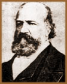
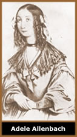
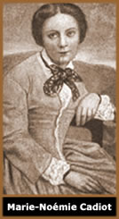
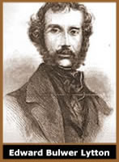
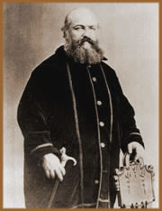

A
Origem Religiosa
O
abade francês Alphonse Louis Constant, conhecido nos meios
ocultistas como Eliphas Levi Zahed (tradução hebraica
de seu nome), é considerado por muitos, o mais importante
ocultista do século XIX. Eliphas nasceu no dia 8 de fevereiro
de 1810 em Paris, filho do sapateiro Jean Joseph Constant e da
dona de casa Jeanne-Agnès Beaupurt. Possuía uma
irmã, Paulina-Louise, quatro anos mais velha.
Quando pequeno, Levi possuía grande aptidão
para o desenho. Mesmo assim, seus pais o encaminharam para o ensinamento
religioso aos 10 anos, quando ingressou no presbitério
da Igreja de Saint-Louis em L'Île, onde aprendeu catecismo
com o abade Hubault. Aos 15 anos, devido ao seu brilhantismo e
dedicação ao sacerdócio, foi encaminhado
ao seminário de Saint-Nicolas du Chardonnet, e começou
a se aprofundar nos estudos lingüísticos de forma
tão notável que logo lia a Bíblia em sua
versão original. Em 1830, foi cursar filosofia no seminário
de Issy. Mais tarde, ingressou em Saint-Sulpice para estudar teologia.
Após terminar o curso de teologia, Eliphas
ascendeu na hierarquia da Igreja e foi aceito nas ordens maiores,
ordenando-se subdiácono. Começou a lecionar em um
colégio para moças e, seguindo com dedicação
a carreira eclesiástica e seus estudos religiosos, escreveu
uma peça bíblica chamada Nimrod, e vários
poemas religiosos que projetaram sua imagem dentro da Igreja.
Entretanto,
o jovem Alphonse sentiu o peso de tantos anos de reclusão
e ascetismo. Conheceu uma jovem, pobre, tímida e retraída
que os outros padres haviam se recusado a atender e preparar para
a comunhão. Eliphas não só aceitou a tarefa,
como prometeu tratá-la como filha. A menina, que se chamava
Adele Allenbach, de uma beleza pura e cândida, pareceu a
Eliphas ser a imagem da própria Virgem Maria. Essa beleza
juvenil correspondeu para ele a uma "iniciação
à vida", pois amou-a ternamente como se fosse uma
deusa, marcando para sempre em sua vida.
Eliphas foi ordenado diácono, em 1835, mas
no ano seguinte, quando estava para atingir o cargo de sacerdote,
confessou ao seu superior o que havia sentido com relação
à jovem, anos antes. Desse momento em diante, as portas
da carreira eclesiástica se fecharam brutalmente para ele,
o que lhe causou uma grande consternação e abalou
sua visão de Deus e do mundo religioso.
Aos 26 anos, Eliphas saiu do seminário e
começou uma nova jornada em sua vida. Sua mãe, ao
saber de sua saída, suicidou-se. E isso, somado ao fato
de que muitos boatos que começaram a circular, diziam que
havia sido expulso do seminário pelo seu envolvimento com
uma jovem, o deixou muito abalado.
A Descoberta do
Ocultismo
Sem experiência do mundo, Eliphas teve muitas
dificuldades para encontrar um emprego, principalmente pelos boatos
que denegriam sua imagem. Assim, percorreu grande parte da França,
trabalhando algum tempo num circo e, em Paris, como pintor e jornalista,
atividades que o levaram a conhecer um grande número de
intelectuais e estudiosos. Com seu amigo Henri-Alphonse Esquirros,
fundou uma revista denominada As Belas Mulheres de Paris,
na qual aplicava-se como desenhista e pintor e Esquirros como
redator.
Em 1839, Eliphas dirige-se a um local no qual entraria
em contato com o oculto e as leituras consideradas proibidas e
perigosas para os cristãos, descobrindo que não
havia perdido a inclinação para a vida mística
e religiosa. Na cidade de Solesmes, havia um convento dirigido
por um abade que não seguia as regras oficiais da Igreja
e que tinha em seu acervo de documentos, grande quantidade de
livros e textos gnósticos, muitos deles ligados à
magia e aos seres de outros planos. Assim, Eliphas, estimulado
pelos acontecimentos em sua vida, mergulha nessas leituras, procurando
entender as relações entre Deus, o homem, o pecado
e o Inferno. Lia os mais diversos autores em busca das respostas
e, lendo livros da Senhora Guyon, chega à conclusões
que mudariam a sua maneira de pensar dali em diante, como ele
próprio chegou a descrever: "A vida e os escritos
dessa mulher sublime, abriram-me as portas de inúmeros
mistérios que ainda não tinha podido penetrar; a
doutrina do puro amor e da obediência passiva de Deus desgostaram-me
inteiramente da idéia do inferno e do livre arbítrio;
vi Deus como o ser único, no qual deveria absorver-se toda
personalidade humana. Vi desvanecer o fantasma do mal e bradei:
um crime não pode ser punido eternamente; o mal seria Deus
se fosse infinito!".
Partiu, então, de Solesmes com uma profunda
paz no coração. Não acreditava mais no inferno!
Já sem se fixar em emprego algum, Levi começou a
escrever e divulgar suas descobertas místicas, que iam
diretamente contra as idéias oficiais da Igreja. Também
entrou em contato com os escritos do místico sueco Emmanuel
Swedenborg (1688 - 1772), que Levi dizia serem capazes de conduzir
o neófito pelo "Caminho Real", embora não
contivessem a "Verdadeira Verdade".
Após publicar sua Bíblia da Liberdade,
Levi foi preso, acusado de profanar o santuário da religião,
de atentar contra as bases da sociedade, de propagar o ódio
e a insubordinação, e teve de pagar uma multa considerável
para a época.
Em 1845, já influenciado por grandes magos
da Idade Média, como Guillaume Postel, Raymond Lulle e
Henry Cornelius Agrippa,
Levi escreve sua primeira obra ocultista, chamada O livro
das Lágrimas ou O Cristo Consolador.
No
ano seguinte Eliphas se casa com Marie-Noémie Cadiot. Matrimônio
esse, que acabou sendo um verdadeiro suplício para ele.
Influenciado pela esposa, Levi chegou a escrever panfletos políticos
incitando o povo contra o governo e a ordem vigente. Foi condenado
a um ano de prisão e ao pagamento de mil francos de multa,
acusado de estimular o povo ao ódio e ao desprezo do governo
imperial; cumpriu seis meses da pena, graças à interferência
de Noémie junto ao governo.
No ano de 1847, nasce a filha de Levi. Menina de
saúde frágil que por várias vezes, esteve
próxima da morte. Numa dessas ocasiões, Eliphas
usou seu conhecimento dos sacramentos e das artes mágicas
e reviveu a menina, numa cerimônia semelhante ao batismo
cristão. Mas, em 1854, a menina não mais resiste
às constantes debilitações e falece, para
desespero do pai. Essa perda o marcou profundamente e influenciou
para que seu casamento não durasse muito.
Eliphas chegou a fundar um clube político,
em 1848, mas no ano seguinte abandonou-o, para dedicar-se exclusivamente
ao Ocultismo.
A Consolidação
do Grande Mestre
Embora saibamos que os estudos ocultistas de Eliphas
começaram no mosteiro, a data de sua iniciação,
propriamente dita, ainda é duvidosa. Sabe-se que ele colaborou
e foi amigo do iniciador do famoso mago Papus. No entanto, tudo
indica que o ocultista polonês Hoene Wronski, tenha sido
o introdutor de Eliphas no "Caminho". Inclusive, Wronski
ao falecer em 1853, em Paris, deixou setenta manuscritos catalogados
por sua esposa, à Eliphas Levi, havendo outros que foram
doados à Biblioteca Nacional de Paris.
No ano seguinte a morte de Wronski, Levi foi para
Londres, onde teve contato com vários ocultistas que queriam
ver os prodígios e milagres que ele era capaz de realizar.
Ao que parece, esses praticantes viam na magia mais um objeto
de curiosidade, do que um caminho de auto-realização.
Isso fez com que Eliphas rapidamente se afastasse deles, isolando-se
no estudo da Alta Cabala, fato que acabou abrindo ainda mais sua
percepção mágica.
Eliphas
encontrou, nesse período, um Grande Adepto (uma pessoa
que atingiu um dos Grandes Graus dentro das Ordens da Senda Real
e da realização divina), que se tornaria seu grande
amigo: Edward Bulwer Lytton. Os dois Mestres teriam trocado informações
iniciáticas sobre as sociedades ocultistas, das quais certamente
eram os grandes expoentes. Inclusive, consta que teriam realizado
trabalhos espirituais em conjunto, indo desde invocações
a contatos com seres de outras esferas de realidade. As anotações
desses trabalhos foram parar nas mãos de Papus, e publicadas
posteriormente. Nesse material, existem registros sobre três
visões de Levi e Lytton: de São João, de
Jesus e de Apolônio de Tiana (na qual Apolônio é
descrito como um velho). Nessas invocações e visões,
teriam entrado em contato com forças que lhes revelaram
os mistérios dos Sete Selos do Apocalipse, possibilitando
a compreensão da Cabala Mágica; conheceram eventos
futuros sobre a vida de ambos e sobre a humanidade; conheceram
a Magia Celeste; também fora-lhes dito sobre as chaves
dos milagres e de todos os prodígios mágicos; e,
parte mais difícil da busca mágica, como manter
e honrar os saberes conquistados na Senda e na Busca pelo Real
Caminho.
Em 1855, Eliphas começou a publicar a Revista
Filosófica e Religiosa, sendo que vários artigos
da mesma, seriam posteriormente utilizados em seu livro A
Chave dos Grandes Mistérios. Nesse mesmo ano, publica
sua obra mais conhecida: Dogma e Ritual da Alta Magia,
desvendando as várias faces do saber mágico. Publica
também, o poema Calígula, retratando na
personagem, o imperador Napoleão. Desse modo, é
preso imediatamente, sendo solto após algum tempo.
Em 1859, publicou História da Magia,
em que relata o desenvolvimento mágico ao longo da história,
e que compõe, com os dois livros anteriores, o conjunto
de livros ocultistas tidos como uma "bíblia",
por todos os que vieram a estudá-los.
Eliphas estava sempre cercado por grande número
de amigos e discípulos, todos eles com conhecimentos profundos;
muitos estavam ligados às várias linhas mágicas
e sociedades esotéricas que existiam na Europa do século
19, a maioria deles, compondo a elite cultural parisiense da época.
Mesmo assim, ainda que tendo acesso a todo o luxo que desejasse,
Eliphas manteve uma vida bem simples, mantendo sempre o seu espírito
em um estado de paz e quietude. Sempre tomava cuidado com o que
comia e bebia, evitando os extremos de calor e frio, e vivia numa
casa fresca e arejada. Também se dedicava a exercícios
moderados para manter o corpo forte. Aos que adoeciam e o procuravam,
sempre recomendava remédios naturais e um estilo de vida
como o que levava: simples e dedicado.
Em 1862, publicou aquela que, segundo ele próprio,
era sua obra mais elaborada: Fábulas e Símbolos.
Consta que o livro não contou apenas com a erudição
de Levi, mas que ele estava inspirado por forças maiores,
como se as idéias simplesmente nascessem, e a própria
Vontade Divina agisse, movendo suas mãos. Ele se sentia
em extrema comunhão com a Luz que envolvia seu trabalho.
O Destino
Selado
Seu trabalho ficou cada vez mais conhecido e não
havia quem não quisesse conhecer Eliphas. Entretanto, quando
tudo transcorria calmamente, uma visita mudou sua a pacata vida.
Era um rapaz bem vestido, com um sorriso sarcástico
e que, em tom jocoso, cumprimentou Eliphas formalmente, entrando
na casa como se fosse sua própria. Assustado, Eliphas procurou
descobrir quem era aquele rapaz. O jovem disse que, embora não
o conhecesse, ele sabia tudo sobre sua vida, tanto seu passado
quanto seu futuro, e continuou, dizendo: "Sua vida está
regulada pela lei inexorável dos números. Sois o
homem do Pentagrama e os anos terminados pelo número cinco
sempre vos foram fatais. Olhai para traz e julgai: em 1815 vossa
vida moral começou, pois vossas recordações
não vão além, em 1825 ingressastes no seminário
e entrastes na liberdade de consciência; em 1845 publicastes
A Mãe de Deus, vosso primeiro ensaio de síntese
religiosa, e rompestes com o clero; em 1855 vós vos tornastes
livre, abandonado que fostes por uma mulher que vos absorvia e
vos submetia ao binário. Notais que se houvésseis
continuado juntos, ela vos teria anulado completamente ou teríeis
perdido a razão. Partistes em seguida para a Inglaterra;
ora, o que é a Inglaterra? Ela é o Iod da Europa
atual; fostes temperar-vos no princípio viril e ativo.
Lá vistes Apolônio, triste, barbeado e atormentado
como estavas naquele período. Mas esse Apolônio,
que vistes era vós mesmo; ele saiu de vós, entrou
em vós e em vós permanece. Vós o revereis
neste ano de 1865, mais bonito, radioso e triunfante. O fim natural
de vossa vida está marcado (salvo acidente) para o ano
de 1875; mas se não morrerdes neste ano, vivereis até
1885".
Após isso, riu-se e incitou Levi com ambições
e alusões à sua grande capacidade mágica
e erudição. Além disso, durante todo o tempo,
mostrou desprezo pela figura de Cristo e ainda disse: "Vós
negastes minha existência, chamo-me Deus. Os imbecis denominam-me
Satã. Para o vulgo chamo-me Juliano Capella. Meu envelope
humano tem vinte e um anos; ele nasceu em Bordéus; tem
pais italianos".
O estranho visitante, então partiu, e jamais
os biógrafos de Eliphas Levi encontraram qualquer traço
do mesmo. O ano de 1865, como ele tinha predito, foi triunfal
para Eliphas, pois a publicação de sua Ciência
dos Espíritos trouxe-lhe enorme reputação
entre os ocultistas de seu tempo.
Da vida para a
História
Em 31 de maio de 1875, como o visitante daquele
dia havia profetizado, Eliphas Levi falece. Sua morte transcorreu
sem agitações. Com coragem e resignação,
ele se manteve calmo, pois sabia que sua missão havia sido
realizada, tanto no que diz respeito a realizações
externas como espirituais. Deixou poucos bens materiais, já
que sempre viveu humildemente. Em seu testamento, deixou apenas
manuscritos e algumas obras de arte em nome de pessoas próximas,
e também algo para a caridade.
Eliphas
Levi não foi só um grande ocultista, mas um grande
homem. Não se dedicou apenas a descobrir e desenvolver
suas habilidades mágicas; seus feitos não eram o
objetivo do caminho verdadeiro, mas uma conseqüência;
o efeito das experiências de contato com o Deus que sempre
habitou em seu coração. Eliphas procurava a conexão
com o saber maior; queria desenvolver seu espírito para
que ele rompesse a prisão do dualismo e superasse o universo
das ilusões e das aparências. Seus livros são
chaves que ajudam os iniciados a abrir portas, descobrindo a sabedoria
dos mais diversos planos de existências. Através
de seus estudos pode-se compreender a verdadeira Kabbalah, a qual
permite entender o mecanismo da vida e da criação
nos mais diversos planos de existência.
Acima de tudo, Eliphas demostrou ser um exemplo,
de como se devem portar os grandes mestres ocultistas, agindo
com humildade, calma e sabedoria; permitindo que sua aura permeie
o ambiente e transmita a Luz em todas as direções.
Deixando para a humanidade, como sua grande e maior obra, a própria
vida.
Por
Spectrum